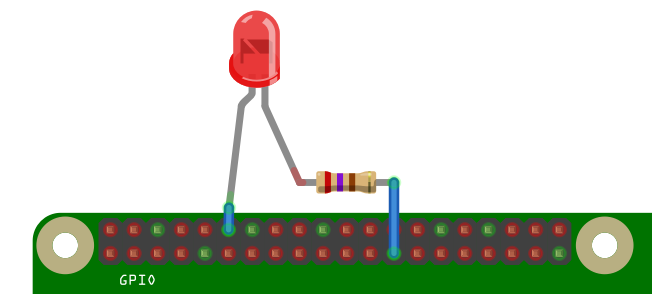

= Interfacciare un programma con il mondo
= Acquisire dati tramite sensori
= Controllare dispositivi
... Gestire il termostato di casa
General Purpose Input Output
= Metodo generale di scambio dati
= Controllare device esterni
= Acquisire dati dall'esterno
I pin e i loro nomi
Si programma un pin come input o output
Si accende o spegne da programma
HIGH/LOW, 3.3 volts o spento
Collegare device con voltaggi diversi può provocare una bella fumata
Non tutto può essere collegato. Ad esempio un motore richiede troppa potenza
Circuito
Pin 12 GPIO18 out, Pin 25 GND
Programma
from gpiozero import LED # Importa le funzioni
from time import sleep
led = LED(18) # Sul pin 18 c'è un LED
while true: # Ripete all'infinito
led.on() # Accende il LED
sleep(2) # e aspetta 2 secondi
led.off() # Spegne il LED
sleep(2) # e aspetta 2 secondi
https://projects.raspberrypi.org/en/projects/physical-computing
Libreria per controllare i pin GPIO
Permette di controllare facilmente componenti comuni e dispositivi più complessi
Già installata su Raspbian
Remote GPIO
Basic recipes: percorso per iniziare con GPIO e Python
Advanced recipes: fino a controllare un robot usando pulsanti
Remote GPIO recipes
Descrizione di tutte le funzioni della libreria
Schede workshop in italiano ( breadboard , GPIO , LED e semaforo con Scratch , semaforo e LED con Python , sense HAT , e altro ancora )
,--------------------------------.
| oooooooooooooooooooo J8 +====
| 1ooooooooooooooooooo | USB
| +====
| Pi Model 3B V1.1 |
| +----+ +====
| |D| |SoC | | USB
| |S| | | +====
| |I| +----+ |
| |C| +======
| |S| | Net
| pwr |HDMI| |I||A| +======
`-| |--------| |----|V|-------'
github.com/cokkaai/RpiJam-2018-02
/
CC-BY-SA-4.0
Davide Bologna / cokkaai -chiocciola- gmail.com
Contents adapted from
GPIO: Models A+, B+, Raspberry Pi 2 B and Raspberry Pi 3 B
/
CC-BY-SA
GPIO Zero: a friendly Python API for physical computing
/
Ben Nuttall
Images
RPi 3 GPIO Pinout
/ by
dirkk
/
CC0-1.0
Reveal.js / The HTML Presentation Framework